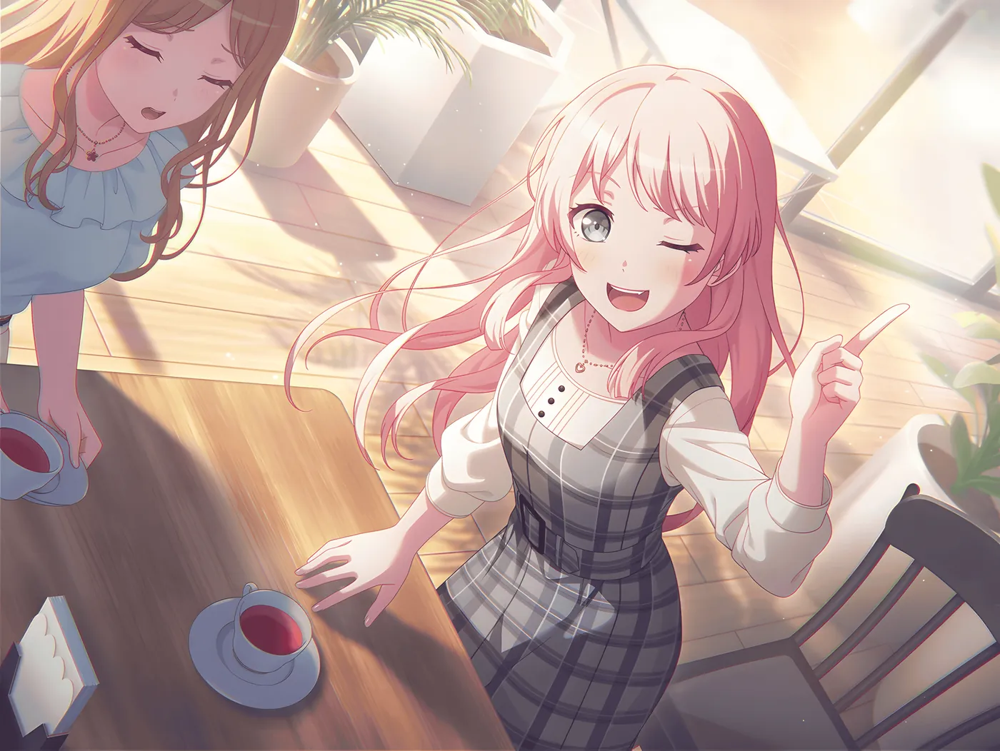

日记
花谢
日记
留言板
今日诗句
🌸 每日更新
🌸 诗句加载中...
🌸
慕尼黑 · 今日
加载中...
🌸 正在获取天气...
🌸
今日心情打卡
🌸 还没有记录
🌸 今天的心情是？点一个表情记录吧
🌸 加载中...
距离 2027 年新年
🌸 计算中...
每日一词
🌸 学点新单词
🌸 加载中...
换一个
本周天气
🌸 7 天预报
🌸 加载中...
专注番茄钟
🌸 写日记也要专注
25:00
开始
重置
🌸 准备好就开始吧
🌸 夏日絮语
2026年8月5日
季节 / 夏
时光集
洛阳的雨比伦敦忧郁
✦ 瑟瑟残阳溅心涧，千里不同日
我把自己浸泡进阳光里面，企图洗去我的孤僻
这里是吐槽栏目
2026年8月6日
日常/光影
打算写小说，但是写了一万字就有点懒了
人怎么可以这么懒
影娥皎月空悲切

他年我若为青帝，报与桃花一处开喵
听歌 · 春日影
2026年8月5日
歌单/书摘
写不出歌词啊，我的青春果然有问题吧
最近在听“好喜欢你”已经循环一千次了吧
许我放荡三十年，千金难买少年弦喵
休闲一下喵
2026年8月2日
生活 / 慢时光
早上起晚了
勉强赶上今天的zzz，快完结了，没得看了（）
怎么大家都有甜甜的恋爱我不活了
✎ 关于博主
博主很抽象喵十分的抽象吗喵，写这个也是写着玩的喵
首页
日记
归档
音乐
工具
游戏
影视
留言
这里是留言板喵
🌸 正在定位你的坐标...
🌸 寄语加载中...
留下你的足迹吧喵 ✨
春风同花皆闻汝等之声，请随意留言喵 ~ 可以分享心情、建议或者想说的。
昵称
留言内容
🌸
0
/300
🌸
😊
😢
😂
🥰
😭
👍
✨
留言
留言通过 Cloudflare Worker 安全存储，不会丢失喵~
留言板
🌸 最新在前
0 则留言
✨ 加载中喵~ ✨
论坛讨论区
🌸 GitHub Discussions 驱动
🌸 论坛加载中...
首页
日记
归档
音乐
工具